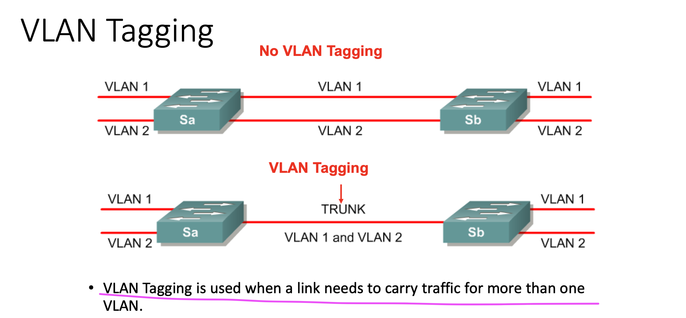
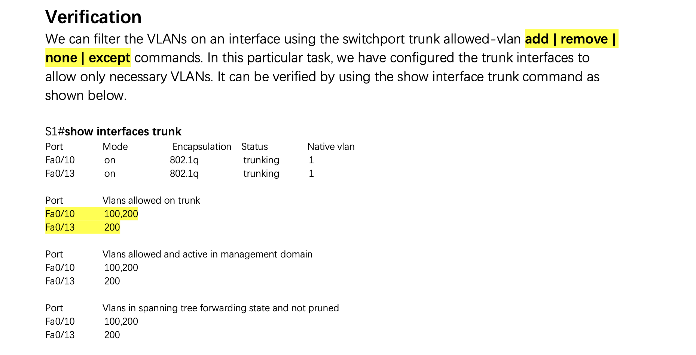
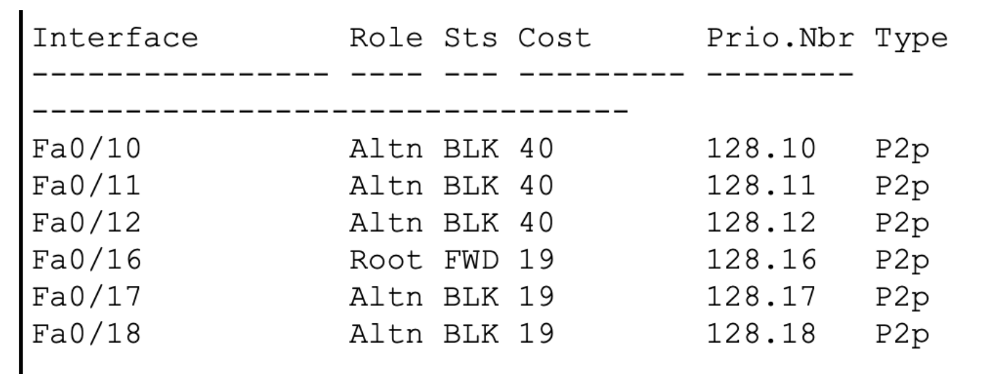

1. Switchport Access Mode vs Trunk Mode
As a general case, freshers in networking domain tend to come across TRUNK and ACCESS terminologies in Switching.
Trunk ports are generally used in the switch to switch communication or switch to Router (Router on a stick). Trunks carry multiple Vlans across devices and maintain VLAN tags in Ethernet frames for receiving directly connected device differentiates between different Vlans.
Access ports are part of only one VLAN and normally used for terminating end devices likes PC, Laptop and printer.
Using the Switchport mode access command forces the port to be an access port while and any device plugged into this port will only be able to communicate with other devices that are in the same VLAN.
Using the Switchport mode trunk command forces the port to be trunk port.
Trunk mode和Access mode都是针对两个交换机端口之间的link的, 下图很好的解释了Trunk的作用, 即一个link可以通过多个vlan的packages:


2. IEEE 802.1Q 和 ISL
下面这几张图很好的解释了IEEE 802.1Q 和 ISL协议的作用,



3. VTP vs DTP
VTP (VLAN Trunking Protocol) is a Cisco proprietary protocol used by Cisco switches to exchange VLAN information. With VTP, you can synchronize VLAN information (such as VLAN ID or VLAN name) with switches inside the same VTP domain. A VTP domain is a set of trunked switches with the matching VTP settings (the domain name, password and VTP version). All switches inside the same VTP domain share their VLAN information with each other.
To better understand the true value of VTP, consider an example network with 100 switches. Without VTP, if you want to create a VLAN on each switch, you would have to manually enter VLAN configuration commands on every switch! VTP enables you to create the VLAN only on a single switch. That switch can then propagate information about the VLAN to every other switch on the network and cause other switches to create it. Likewise, if you want to delete a VLAN, you only need to delete it on one switch, and the change is automatically propagated to every other switch inside the same VTP domain.

On SW1, we have created a new VLAN. SW1 sends a VTP update about the new VLAN to SW2, which in turn sends its VTP update to SW3. These updates will cause SW2 and SW3 to create the same VLAN. You can see how this simplifies network administration – the engineer only had to log in and create the VLAN on the first switch. Other switches have created the same VLAN automatically.
NOTE: VTP does not advertise information about which switch ports are assigned to which VLAN.
DTP, Dynamic Trunking Protocol, is a trunking protocol that is developed and proprietary to Cisco which is used to automatically negotiate trunks between Cisco switches. Trunk negotiations are managed by DTP only if the port is directly connected to each other.
Ethernet trunk interfaces support various trunking modes(就是下面说的各种模式). Those interfaces can be configured as a trunk or non-trunk, or to initiate negotiating trunking to a neighbor interface or is waiting to receive a trunking negotiation message from another directly connected interface. Most Cisco switches nowadays use IEEE 802.1Q as their trunking type of choice because of less overhead compared to Inter-Switch Link (ISL).
switchport mode access - 将接口（接入端口）置于永久非中继模式，并协商将链路转换成非中继链路。不管相邻接口是否为 TRUNK 接口，该接口都会变为非 TRUNK 接口。
switchport mode dynamic auto - 使接口能够将链路转换为中继链路。当相邻接口设置为 trunk 或 desirable 模式时，该接口将变为 TRUNK 接口。所有以太网接口的默认 switchport 模式为 dynamic auto。
switchport mode dynamic desirable - 使接口主动尝试将链路转换为中继链路。当相邻接口设置为中继、期望或动态自动模式时，该接口将变为中继接口。这是老式交换机的默认 switchport 模式，例如 Catalyst 2950 和 3550 系列交换机。
switchport mode trunk - 中继模式会将接口置为永久中继模式，并协商将相邻链路转换为中继链路。即使相邻端口不是 TRUNK 接口，该接口也会变为 TRUNK 接口。
switchport nonegotiate - 可防止接口生成 DTP 帧。只有当接口的 switchport 模式是 access 或 trunk 时，可以使用此命令。您必须手动将相邻接口配置为中继接口，才能建立中继链路。
DTP叫动态中继协议，两个交换机接口间通信接口必须为Trunk(不能是Access)且封装模式必须相同。
封装模式：
VTP modes
- Server – default mode. Sends VLAN information to other switches.
- Client – receives VLAN information and forwards it to other switches.
- Transparent – forward VTP traffic but do not originate or use it. They can have their own VLANs, not shared with other switches.
为对比DTP的mode, 我们看看静态手动怎么设置:


然后再看看有了DTP是怎么设置的:


一些常用命令:
1
2
3
4
5
6
7
8
9
10
11
12
13
14
15
16
17
18
19
20
21
22
23
24
25
26
27
28
29
30
31
32
33
34
35
36
37
|
#---------------------查看命令-----------------------#
show vlan brief
show interfaces trunk
show interfaces f0/10 switchport
show ip interface brief
sh ip route
# VTP相关
show vtp status
show vtp password
# spanning tree 相关
show spanning-tree detail
show spanning-tree vlan <vlan_value>
# No attempt to perform a DNS resolution/lookup
no ip domain-lookup
# 删除Vlan
no vlan 2
#--------------------------配置spanning tree--------------------------#
# 查看相关信息
S1(config)#show spanning-tree vlan 3
# Configure S1 as root bridge, S2 as backup root bridge for VLAN
S1(config)#spanning-tree vlan 1 root primary
S2(config)#spanning-tree vlan 1 root secondary
# Change the path of traffic for VLAN 1 from S2 to S1 through S3
S2(config)#interface rang f0/10-12
S2(config-if-range)#spanning-tree vlan 1 cost 40
# Change the path of traffic for VLAN 1 from S2 to S1 through S3
# 即让 S1 和 S2之间的接口都blocked, 这样从S2发出的package才能过S3到S1, 如下图
# 另外注意, 一个VLAN有一个独立的spanning tree, 即把多个VLAN看成相对spanning tree互不干涉的很多层
S2(config)#interface rang f0/10-12
S2(config-if-range)#spanning-tree vlan 1 cost 40
|


1
2
3
4
5
6
7
8
9
10
11
12
13
14
15
16
17
18
19
20
21
22
23
24
25
26
27
28
29
30
31
32
33
34
35
36
37
38
39
40
41
42
43
44
45
46
47
48
49
50
51
52
53
54
55
56
57
58
59
60
61
62
63
64
65
66
67
68
69
70
71
72
73
74
75
76
77
78
79
80
81
82
83
84
85
86
87
88
89
90
91
92
93
94
95
96
97
98
99
100
101
102
103
104
105
106
107
108
109
110
111
112
113
114
115
116
117
118
119
120
121
122
123
124
125
126
127
128
129
130
131
132
133
134
135
136
137
|
# 接上...
# Change the root port on S2 for VLAN 1. (root port from F0/16 to F0/18)
S3(config)#int f0/18
S3(config-if)#spanning-tree vlan 1 port-priority 64
#---------------------密码相关-----------------------#
# 配置enable密码
S1(config)#enable password inwk
# 远程配置密码
R1(config)# line con 0
R1(config-line)# password abc
R1(config-line)# login
# 配置ssh密码
R1(config)#line vty 0 4
R1(config-line)# password inwk // 这个密码是当用telnet/ssh远程连接成功之后, 第一次需要输入的密码
R1(config-line)#transport input ssh/telnet
R1(config-line)# login
#-----------------------设置IP--------------------------#
# 为interface设置ip和子网掩码
R1> en
R1# conf t
R1(config)# interface fa0/0
R1(config-if)# ip address 192.168.10.1 255.255.255.0
R1(config-if)# no shutdown
R1(config-if)# exit
# 为Vlan设置ip, 注意子网掩码24位的时候的数值
要求: 10.1.1.1/24
S1(config)#interface vlan 1
S1(config-if)#ip address 10.1.1.1 255.255.255.0
S1(config-if)#no shutdown
# 为路由器或交换机设置默认网关
Sx(config)#ip default-gateway 10.1.1.10
#----------跨vlan交换信息---------#
# As we know, there should be at least one L3 device; that is, a router or L3-capable switch.
# So we are using R1 to perform inter-VLAN routing for VLAN 100 and VLAN 200.
# Make sure that the switchport connected to R1 is configured as static trunk because a router does not support DTP.
# Additionally, we must configure sub-interfaces on R1 on the basis of which VLANs we are trying to route to each other.
# 这一步是把物理接口设置无ip 然后no shutdown, 然后才能设置子接口
R1(config)#interface f0/0
R1(config-if)#no ip address
R1(config-if)#no shutdown
# 设置子接口
R1(config)#interface f0/0.100 # 一般这里的0.100与其归属的vlan id一样
R1(config-subif)#encapsulation dot1Q 100 # 这是设置该接口属于vlan 100
R1(config-subif)#ip add 100.1.1.1 255.255.255.0
R1(config-if)#no shutdown
R1(config)#interface f0/0.200
R1(config-subif)#encapsulation dot1Q 200
R1(config-subif)#ip add 200.1.1.1 255.255.255.0
R1(config-if)#no shutdown
# Because we are using routers as the hosts, we must disable "ip routing" first and set the default gateway accordingly.
R2(config)#no ip routing
R2(config)#ip default-gateway 100.1.1.1
#-----------在交换机为不同Ports设置Vlan-------------------#
# 首先创建VLAN
Sx(config)#vlan 100
Sx(config-vlan)#name A
# 设置指定接口mode并设置归属vlan
S1(config)#interface f0/1
S1(config-if)#switchport mode access
S1(config-if)#switchport access vlan 100
# 也可以批量设置
S1(config)# interface rang f0/11-12, f0/14-15
S1(config-if-range)#....
#--------------------------设置静态Trunk--------------------------#
# 配置两个交换机接口链路为trunk且encapsulation为802.1Q
# Configure IEEE 802.1Q encapsulation between S1 & S2
S1(config)#interface f0/10
S1(config-if)#switchport trunk encapsulation dot1q
S1(config-if)#switchport mode trunk
S1(config-if-range)#no shutdown
S2(config)#interface range f0/10-12, f0/16-18
S2(config-if)#switchport trunk encapsulation dot1q
S2(config-if)#switchport mode trunk
S2(config-if-range)#no shutdown
# 指定VLAN可以通过某个Trunk
# Configure Sw1 and Sw2 to allow VLAN 100 and VLAN 200 on their trunk interface:
S1(config)#interface f0/10
S1(config-if)#switchport trunk allowed vlan 100,200
S2(config)#interface f0/10
S2(config-if)#switchport trunk allowed vlan 100,200
#--------------------------动态Trunk DTP--------------------------#
# 注意配置顺序其实和上面是相同的 只是 这个mode不是简单的trunk而是dynamic desirable
# 另外的三个mode在上面有介绍, dynamic auto等
# Configure S1 with DTP dynamic desirable mode for both trunk ports.
S1(config)#interface f0/10
S1(config-if)#switchport mode dynamic desirable
S1(config-if)#switchport trunk encapsulation dot1q
S1(config)#interface f0/13
S1(config-if)#switchport mode dynamic desirable
S1(config-if)#switchport trunk encapsulation dot1q
# Configure S2 with DTP dynamic auto mode on its trunk port:
S2(config)#interface f0/10
S2(config-if)#switchport mode dynamic auto
S2(config-if)#switchport trunk encapsulation dot1q
#--------------------------设置VTP--------------------------#
1. Create VLAN 300 on Sw2.
S2(config)#vlan 300
2. Configure Sw2 as the VTP server.
S2(config)#vtp mode server
3. Configure VTP parameters as follows on all switches (S1, S2 and S3):
VTP version: 2
VTP domain: inwk
VTP password: inwk
Sx(config)#vtp version 2
Sx(config)#vtp domain inwk
Sx(config)#vtp password inwk
4. Configure Sw1 in VTP transparent mode and create VLAN 300.
S1(config)#vtp mode transparent
S1(config)#vlan 300
5. Configure Sw3 in VTP client mode.
S3(config)#vtp mode client
6. Assign VLAN 300 on the ports connected to R3 and R4.
S2(config)#interface f0/4
S2(config-if)#switchport access vlan 300
S3(config)#interface f0/3
S3(config-if)#switchport access vlan 300
|
其它
1
2
3
4
5
6
7
8
9
10
11
12
13
14
15
16
17
18
19
20
21
22
23
24
|
查看trunk相关协议
show interfaces trunk
show interfaces f0/10 switchport
查看vtp domain
show vtp status
查看vtp密码
show vtp password
查看默认网关
sh ip route
查看接口信息
show interface brief
查看spanning tree的root, 看bridge ID, 如果相同就看MAC地址, 看root ID下面的mac address是谁：
show spanning-tree vlan 3
每个vlan都有一个spanning tree
Change the path of traffic for VLAN 1 from S2 to S1 through S3 ，意思是对于vlan 1，从s2的到s1的包 必须过s3 所以你就要想办法增加s2与s1相连接口的cost 使其block 这样 便可以从s3过 而不是直接到s1
interface rang f0/10-12
spanning-tree vlan 1 cost 40
修改上游的对应接口，即看先用 show spanning tree vlan 2 在下游路由器查看它的root port，然后再用下面的指令在上游路由器修改对应port，
Change the root port on S2 for VLAN 1. (root port from F0/16 to F0/18)
S3(config)#int f0/18
S3(config-if)#spanning-tree vlan 1 port-priority 64
|
References: